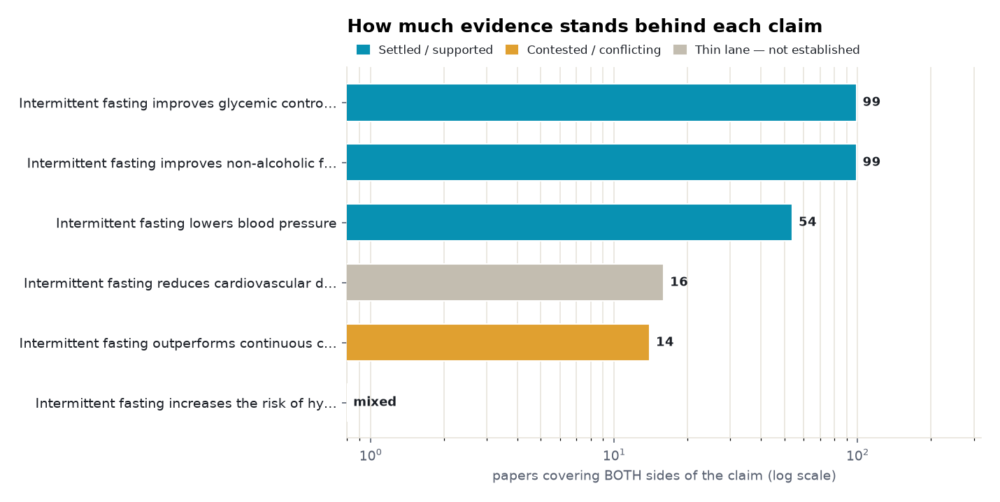
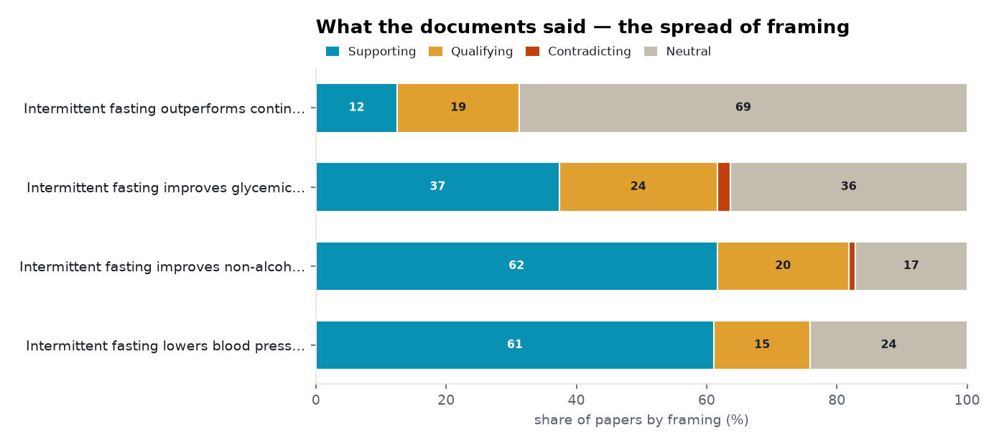
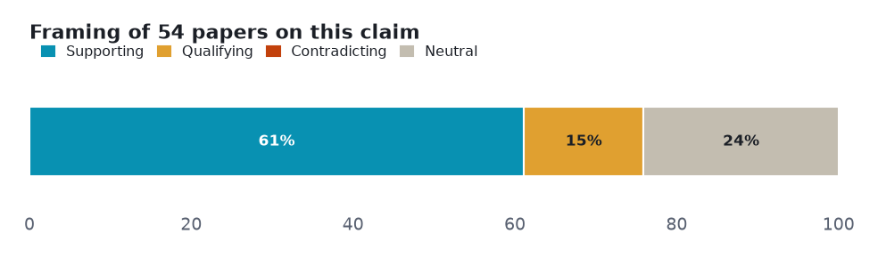
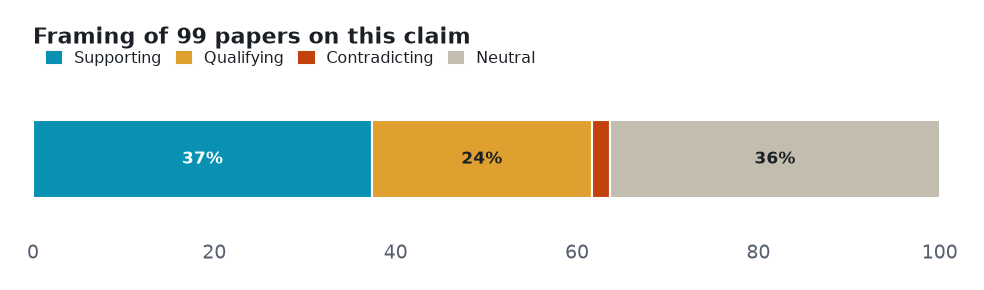
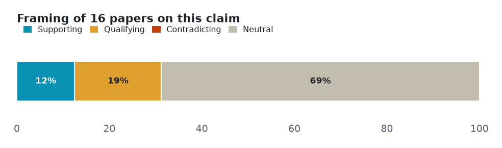
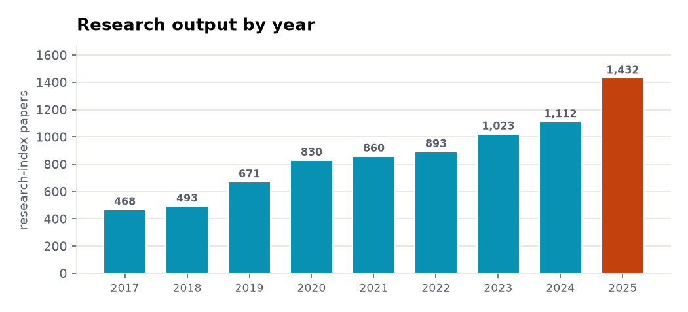
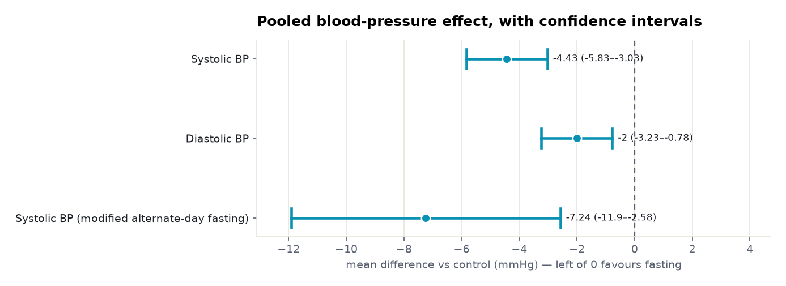
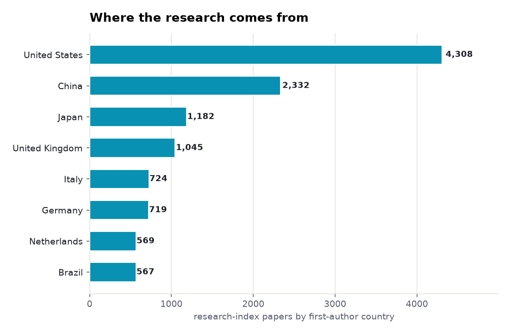

Six claims about intermittent fasting tested against both sides of the published literature — 3 that the evidence settles, 2 it leaves genuinely contested, 1 with too thin a lane to call.
Every number below is retrieved, not generated. Each angle is a claim run against the research layer on both sides — the papers that affirm it and the papers that push back — so the verdict reflects how much evidence exists and which way it leans, not a single cherry-picked study. Effect sizes are quoted verbatim and verified; thin lanes are reported as inconclusive rather than charted as fact.
| Subject | intermittent fasting |
| Retrieved | 2026-11-06 |
| Coverage | research typed 107% · research 104.2% · biomedical 100% |
| Source | Prism public API — research.evidence (one call per angle) + research.brief |
Each section is one claim. The bar shows how the papers framed it — supporting, qualifying (yes, but…), contradicting, or neutral — and the verdict weighs that spread against how deep the evidence runs. A claim can be loudly discussed yet thinly evidenced; the brief says which.
Two cross-cutting views before the angle-by-angle read: how much both-sides evidence each claim has, and how the literature splits on framing.


Overwhelmingly positive framing, which on a citation-weighted corpus can mean consensus or can mean publication bias.

Common findings
Verdict: Well supported · both-sides papers: 54 · mean stance: +0.37
Mostly positive framing, with a substantial cautionary minority.
Common findings
Verdict: Well supported · both-sides papers: 99 · mean stance: +0.36
Mostly positive framing, with a substantial cautionary minority.

Common findings
Verdict: Supported · both-sides papers: 99 · mean stance: +0.18
Mixed framing with no dominant lean. Only 14 papers cover both sides; evidence is about the subject alone and does not establish superiority.

Common findings
Verdict: No advantage · both-sides papers: 14 · mean stance: +0.17
Automated lane over-resolved to the diabetes field; read from documents. Corley 2018 RCT: RR 2.05 (1.17-3.52); INTERFAST-2 (Obermayer 2023): no severe hypoglycemia; Ramadan review: conflicting results.
Lane not cleanly resolved — read from the documents. Not charted as established; the finding is reported from the individual studies.
Common findings
Verdict: Conflicting · both-sides papers: mixed
Mostly positive framing, with a substantial cautionary minority. Only 16 papers cover both sides; most matched papers are surrogate markers or animal studies.
Thin lane — 16 papers cover both sides. Not charted as established; reported as the boundary of the evidence.
Common findings
Verdict: Not established · both-sides papers: 16 · mean stance: +0.10
The field's own tempo: research-index papers on this subject per year, from 468 in 2017 to 1,432 in 2025.

Where the settled angles carry pooled effect sizes, here they are verbatim — point estimate and 95% confidence interval, each verified against its source.

Common findings
First-author affiliation of the research-index papers — a read on who is producing the evidence.

Common findings
Counts and shares measured from the data. Effect sizes copied verbatim and verified against source. 'reading' is Prism's interpretation of the slice, not a verdict on truth. Thin claim lanes are reported inconclusive, not charted.
Each angle is one call against the research-evidence layer: the claim is posed, both sides of the literature are retrieved, and the framing tally is computed from the returned papers. Thin lanes are named, not inflated — the point of the exercise is to show where the evidence is deep, where it is contested, and where it barely exists.
A Prism worked example. Charts are generated from the retrieved data; every quoted finding is verbatim and verified. data.json holds the underlying numbers.